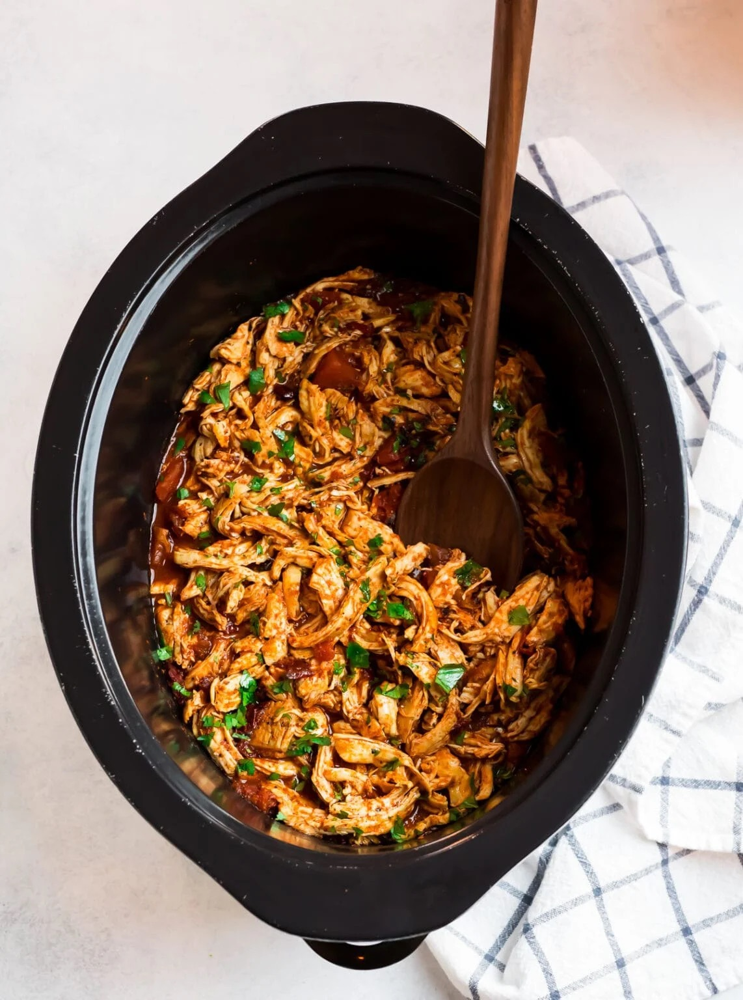

Crockpot Mexican Chicken

Description
Spending too much money on Chipotle burrito bowls? Never fear, for my Crockpot Mexican Chicken recipe is here! This is a simple but delicious recipe that requires very little prep time - making it a perfect meal for people with busy schedules or lazy cooks like myself.
Ingredients
- 2 pounds boneless skinless chicken thighs
- 1 1/2 teaspoons kosher salt
- 1/2 teaspoon black pepper
- 1 tablespoon extra-virgin olive oil
- 1 tablespoon chili powder
- 1 teaspoon garlic powder
- 1 teaspoon onion powder
- 1 teaspoon dried oregano
- 1 can fire-roasted diced tomatoes in their juices 14 ounces
- 2 - 3 chipotle peppers in adobo
Steps
- Lightly coat a 6-quart slow cooker with nonstick spray. Season both sides of the chicken with 1 teaspoon kosher salt and black pepper.
- Heat the olive oil in a large skillet. Once hot and shimmering, add the chicken. Sear each side for 2 to 3 minutes each, just until brown (the chicken does not need to be cooked through). Do not disturb the chicken while each side sears. Transfer to the prepared slow cooker.
- Sprinkle the chicken with the chili powder, garlic powder, onion powder, oregano, and remaining 1/2 teaspoon kosher salt. Pour in the tomatoes including their juices. Scatter the chipotle peppers over the top.
- Cover and cook on low for 4 to 5 hours or on high for 1 to 2 ½ hours, until the chicken is cooked through and reaches an internal temperature of 165 degrees F. The cooking time will vary based on your slow cooker and the size of your chicken breasts. Remove the chicken to a cutting board. Let the chicken rest for 5 minutes, then shred with two forks, either on the cutting board or return it to the slow cooker and shred it directly in the slow cooker with two forks (or for even faster shredding) a hand mixer.
- Return the chicken to the slow cooker (if needed) and stir in with the cooking liquid. Add in the optional beans and Mexican corn (if using). Cover and cook on low for 15 minutes to allow the chicken to absorb the flavor and cooking juices. Taste and season with additional salt as desired. Serve the chicken hot, on top of brown rice, inside enchiladas, for quesadillas or tacos, or any way you like.